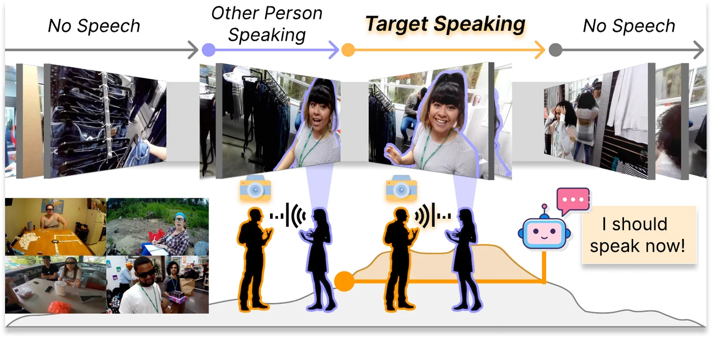
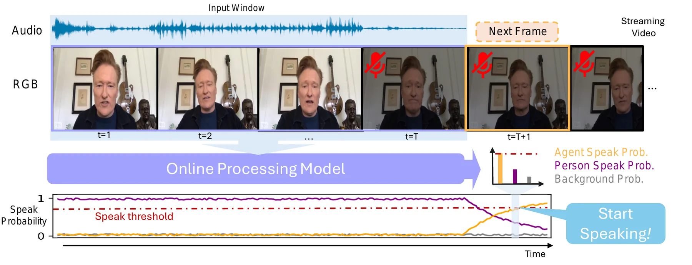
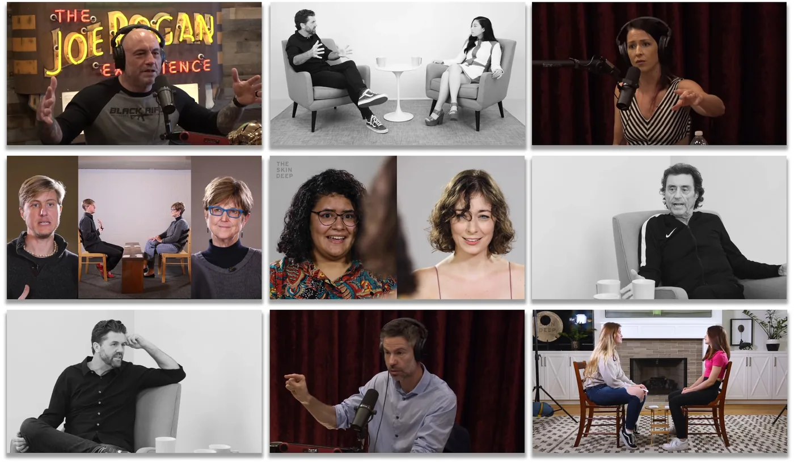
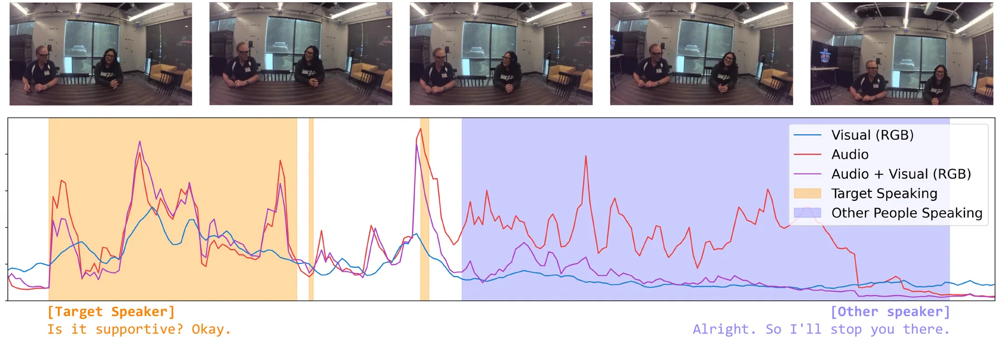
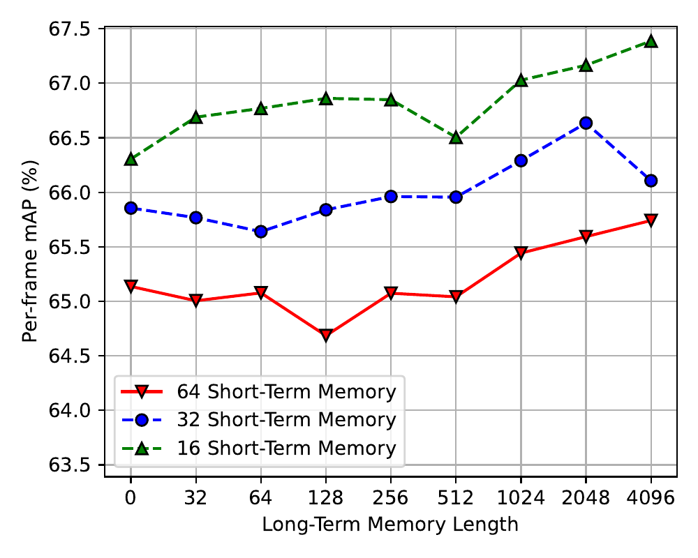
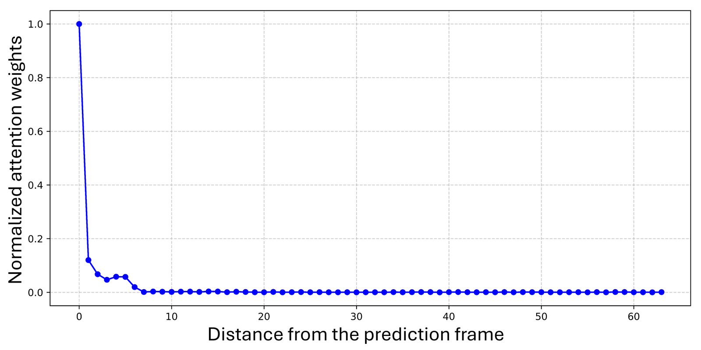
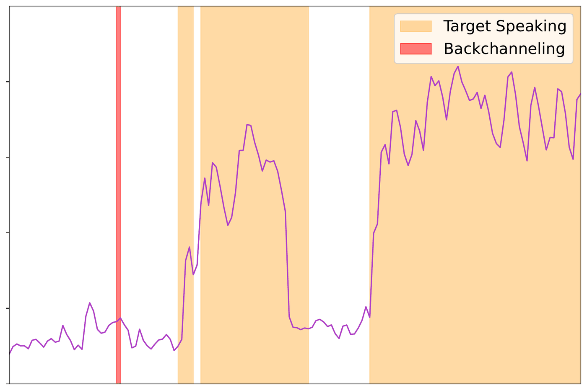

Overview
Speaking is easy. Knowing when is not.
A real-world conversational agent cannot wait for a tidy pause before it talks. Conversations in the wild overlap, stall, and restart; speaker roles blur. EgoSpeak predicts, at every frame of an egocentric video stream, whether the camera wearer is about to start speaking — treating the wearer's own speaking moments as free supervision for natural turn-taking.
The model watches exactly what the agent would see and hear, processes it causally in real time, and outputs a continuous speak probability that an agent can act on the moment it crosses a threshold.
- Egocentricfirst-person view — the stream is exactly what the agent perceives
- RGBworks from raw pixels when audio or nonverbal cues are unreliable
- Onlinecausal, real-time — only the past is visible at every step
- Untrimmedlong streams with silence and sporadic turns, not pre-cut clips
Prior utterance-initiation and turn-taking methods cover at most two of these four capabilities; EgoSpeak is built for all of them.
Task
Predict the turn — don't detect the silence.
Commercial dialogue systems typically speak after detecting a fixed silence interval, which leaves an agent roughly 200 ms to respond. Psycholinguistics tells a different story: humans start preparing their response while the other person is still talking.
EgoSpeak therefore frames the problem as anticipation: at each timestep it classifies the next 10 future steps (up to 2 s) as background, target speaker speaking, or other person speaking — before the turn shift happens.


Framework
One causal pass over an untrimmed stream.
Video is downsampled to 20 FPS and encoded at 5 predictions per second: RGB features from a Kinetics-400-pretrained ResNet-50, audio features from wav2vec2, concatenated per frame. On top, three online backbones are evaluated — a Transformer (LSTR), a GRU, and a Mamba model — trained with a cross-entropy objective, akin to next-token prediction in language modeling.

Dataset
YT-Conversation: pretraining from the wild.
Turn-taking corpora usually come from labs or video calls — expensive to annotate and far tamer than real conversation. YT-Conversation instead harvests podcasts, interviews, and casual face-to-face dialogues from YouTube, pseudo-labeled automatically with voice activity detection at 200 ms resolution. Only YouTube IDs are released, so creators keep control of their content.

Results
Anticipation beats waiting for silence.
On two egocentric benchmarks — EasyCom (controlled, around-a-table) and Ego4D (in-the-wild, audio-visual diarization split) — EgoSpeak's predictive models roughly double the target-speaker average precision of a silence-based rule, even though the evaluation is deliberately biased in that rule's favor. The silence rule lands at random-baseline level.
| Model | Modality | EasyCom | Ego4D |
|---|---|---|---|
| Transformer | A | 56.9 ± 0.05 | 69.2 ± 0.03 |
| V | 51.0 ± 0.08 | 58.0 ± 0.27 | |
| A+V | 58.7 ± 0.13 | 69.0 ± 0.24 | |
| A+VP | 58.5 ± 0.26 | 68.9 ± 0.18 | |
| GRU | A | 57.0 ± 0.30 | 69.2 ± 0.25 |
| V | 51.7 ± 0.29 | 57.9 ± 0.61 | |
| A+V | 60.6 ± 0.17 | 68.2 ± 0.42 | |
| A+VP | 57.0 ± 0.29 | 68.3 ± 0.18 | |
| Mamba | A | 55.4 ± 0.62 | 67.9 ± 0.37 |
| V | 50.9 ± 0.21 | 57.7 ± 0.28 | |
| A+V | 57.4 ± 0.26 | 67.5 ± 0.18 | |
| A+VP | 55.8 ± 0.43 | 65.8 ± 0.23 |
Audio+visual input wins on EasyCom (GRU reaches 60.6 mAP); on the noisier Ego4D, audio alone is already strong at 69.2 mAP. Vision-only models trail but stay clearly above chance — enough to matter when audio fails. YT-Conversation pretraining brings modest overall change, with its clearest gain on the other person speaking class (+0.7 AP on EasyCom, +1.5 on Ego4D).

Analysis
What the models tell us.


Motion helps
| Model | Modality | Avg. mAP |
|---|---|---|
| Transformer | A (+F) | 57.0 (+8.0) |
| V (+F) | 51.2 (+6.4) | |
| A+V (+F) | 58.8 (+9.6) | |
| GRU | A (+F) | 57.1 (+3.9) |
| V (+F) | 51.2 (+4.2) | |
| A+V (+F) | 61.2 (+0.9) | |
| Mamba | A (+F) | 55.6 (+2.6) |
| V (+F) | 51.3 (+3.9) | |
| A+V (+F) | 57.6 (+2.7) |
Fast enough to interrupt you
| Model | FPS | Params | GFLOPs |
|---|---|---|---|
| Transformer | 99.8 | 67.21M | 129.48 |
| RNN (GRU) | 13,939.5 | 34.6M | 206.52 |
| Mamba | 12,009.3 | 83.1M | 610.93 |

Citation
BibTeX
@inproceedings{kim-etal-2025-egospeak,
title = {{EgoSpeak}: Learning When to Speak for Egocentric Conversational Agents in the Wild},
author = {Kim, Junhyeok and Kim, Min Soo and Chung, Jiwan and Cho, Jungbin and
Kim, Jisoo and Kim, Sungwoong and Sim, Gyeongbo and Yu, Youngjae},
booktitle = {Findings of the Association for Computational Linguistics: NAACL 2025},
publisher = {Association for Computational Linguistics},
year = {2025}
}